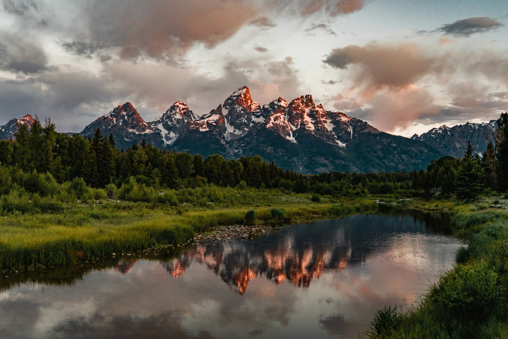
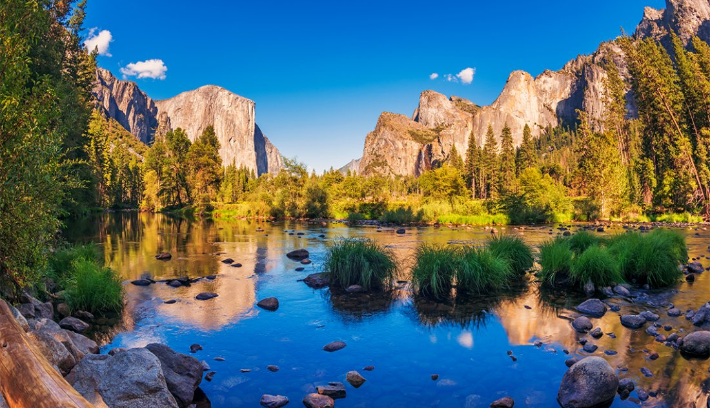

Appalachian Trail
The Appalachian Trail stretches over 2,000 miles from Georgia to Maine, passing through forests, mountains, and charming towns. It’s a classic American hiking experience for both casual hikers and thru-hikers.
Learn MoreExplore breathtaking trails across America!


Hiking in the U.S. offers some of the most stunning landscapes in the world. From towering mountains to serene forest paths, there’s a trail for everyone. This site highlights a few of the most iconic and scenic hikes you can experience.
The Appalachian Trail stretches over 2,000 miles from Georgia to Maine, passing through forests, mountains, and charming towns. It’s a classic American hiking experience for both casual hikers and thru-hikers.
Learn More
The Grand Canyon offers awe-inspiring vistas and trails that range from short rim walks to challenging backcountry hikes. The Bright Angel Trail is a must-try for stunning views of the canyon walls and Colorado River.
Learn More
Yosemite is famous for its granite cliffs, waterfalls, and giant sequoias. Trails like the Mist Trail to Vernal and Nevada Falls offer a perfect mix of challenge and breathtaking scenery.
Learn More